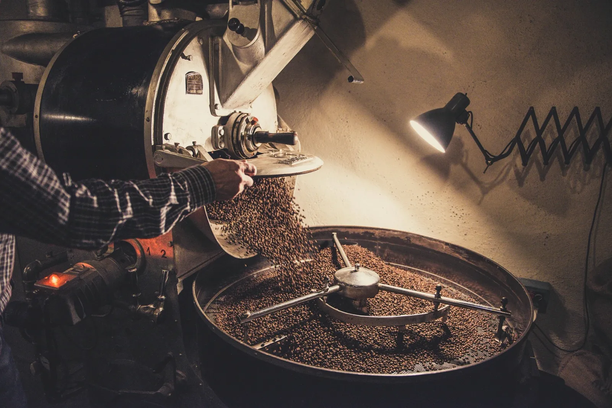
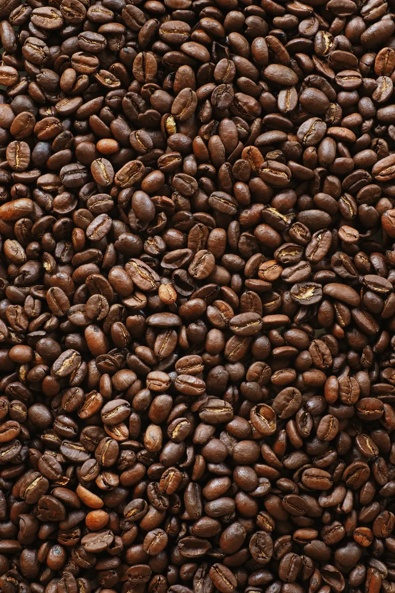
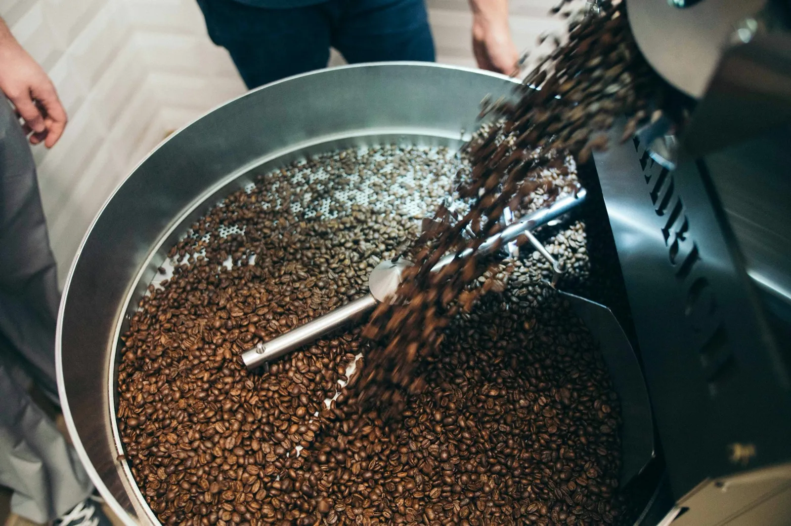
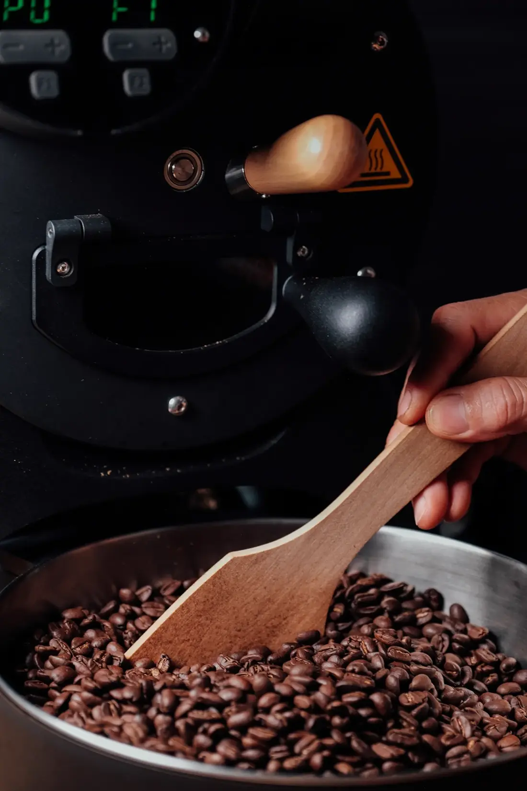
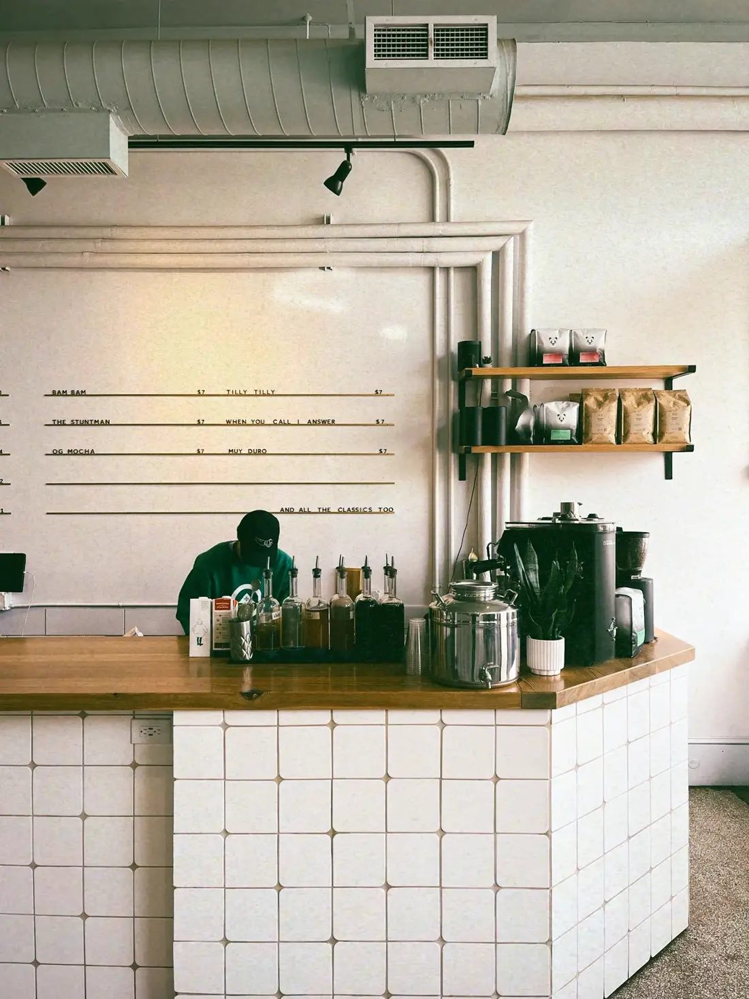

助任珈琲豆店
助任橋のたもとで、
豆を焼いています。
徳島市助任本町の、自家焙煎の珈琲豆店です。
焼くのは火曜と金曜の朝。100gから、焼いた日を書いた袋でお渡しします。
営業10:00–18:00
定休水曜・日曜
場所助任橋から歩いて3分
今週の豆
-
助任ブレンド
100g620円毎朝、店で自分が飲んでいるのはこれです。苦すぎず、冷めても甘さが残ります。
-
川沿いの深煎り
100g640円牛乳を入れる方に。どっしりしていて、カフェオレにしても味が負けません。
-
エチオピア グジ ナチュラル
100g780円苺やブルーベリーのような香り。酸っぱいのが苦手な方は、一度だけ試してみてください。
-
グアテマラ ウエウエテナンゴ
100g700円チョコレートとオレンジ。初めての方に一番すすめているのはこの豆です。
-
ブラジル セラード
100g620円ナッツのような香ばしさ。毎日たくさん飲む方の、いつもの一杯に。
-
インドネシア マンデリン
100g720円土っぽさとハーブの香り。夜にゆっくり飲むなら、これを選びます。
量は100gから、200g・500gでも承ります。挽き方（豆のまま・ペーパー用・フレンチプレス用）は、ご注文のときにお知らせください。季節の豆は入荷した週だけ、この一覧に足しています。

焙煎日
火と金
焼くのは火曜と金曜の朝です。前の日の18時までにいただいたご注文を焼いて、その日の昼からお渡しできます。焼いてから3日目くらいが飲みごろなので、袋にはかならず焼いた日を書いています。
- ご注文の締め切り
- 焼く日の前日 18:00
- お渡し
- 焼く日の 12:00 から
- 郵送
- 焼いた日に発送・送料520円
十月October 2026
| 日 | 月 | 火 | 水 | 木 | 金 | 土 |
|---|---|---|---|---|---|---|
| 1 | 2 | 3 | ||||
| 4 | 5 | 6 | 7 | 8 | 9 | 10 |
| 11 | 12 | 13 | 14 | 15 | 16 | 17 |
| 18 | 19 | 20 | 21 | 22 | 23 | 24 |
| 25 | 26 | 27 | 28 | 29 | 30 | 31 |
焙煎日定休日（水・日）

店主

焼いてから三日目くらいが、
いちばんおいしいと思っています。
はじめまして、店主の平岡です。大阪の焙煎所で8年、豆を焼いてきました。2021年に生まれ育った徳島へ戻り、この店を開きました。
子どものころ、助任川沿いの道を歩いて学校に通っていました。店の名前は、そこから迷わず決めました。
豆は、お客さんと話しながら一緒に選びたいと思っています。「いつもより少し濃いのがいい」くらいの言い方で大丈夫です。
Roaster平岡 修
お店
- 住所
- 徳島市助任本町2丁目助任橋から、川沿いを北へ歩いて3分です。
- 営業時間
- 10:00–18:00
- 定休日
- 水曜・日曜臨時のお休みは、Instagramでお知らせします。
- 駐車場
- 店の前に2台
- お支払い
- 現金・カード・PayPay
